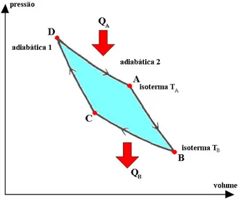

Máquina de Carnot
Teorema de Carnot
Carnot mostrou que a maior eficiência possível de uma máquina térmica entre duas temperaturas T1 (fonte de calor) e T2 (fonte de frio) seria a de uma máquina realizando um ciclo teórico composto por duas transições isotérmicas e duas transições adiabáticas alternadas, onde o gás sofre uma transformação isotérmica se expandindo e absorvendo de uma fonte quente Q1 a temperatura T1, em seguida, sofre uma transformação adiabática, logo, sua temperatura cai para um valor T2, partindo para uma compressão isotérmica, liberando uma quantidade de calor Q2 para a fonte fria à temperatura T2, por fim, sofre uma compressão adiabática e retorna a sua condição inicial
No ciclo de Carnot, o calor trocado com as fontes de frio e calor (Q1 e Q2) é proporcional às respectivas temperaturas absolutas (T1 e T2).
(Q2 / T2) = (Q1 / T1) ou (Q2 / Q1) = (T2 / T1)
Substituindo na equação de eficiência da máquina térmica, obtemos uma expressão que dá a máxima eficiência entre as duas temperaturas da fonte de calor e da fonte de frio:
rmax=1- (T2 / T1)
Para um ciclo de Carnot, Q1/Q2 = T1/T2.
A eficiência da máquina de Carnot pode então ser expressa em função da temperatura absoluta das duas fontes:
r = 1 - T1/T2
Independentemente da substância operacional na máquina, logo, é uma função proprietária da temperatura absoluta das fontes de frio e calor.
Portanto, fica claro que todas as máquinas de Carnot operando entre as mesmas temperaturas T1 e T2 possuem a mesma eficiência.
A eficiência de uma máquina real é sempre menor que a de uma máquina de Carnot operando entre as mesmas duas temperaturas.
A eficiência de uma máquina real é sempre menor que a de uma máquina de Carnot operando entre as mesmas duas temperaturas.
E = T1/(T1 - T2)